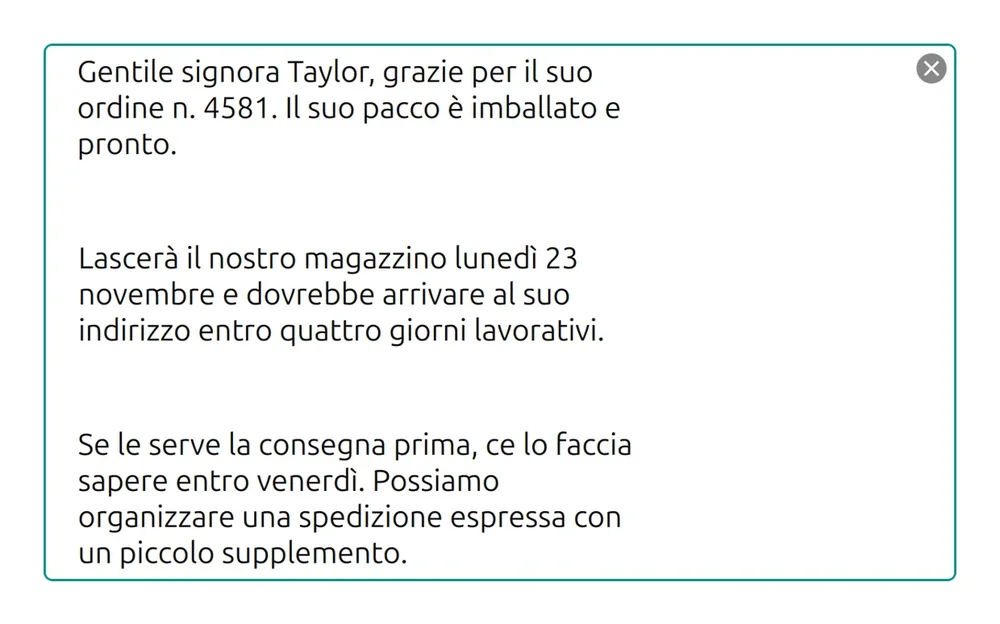

Cronologia delle versioni
Versione 1.31.0
uscita il
- ClipSD parla 12 lingue: russo, inglese, bulgaro, ucraino, tedesco, francese, spagnolo, italiano, portoghese, polacco, turco e cinese. La lingua cambia subito, senza riavvio: menu dell’icona vicino all’orologio, globo nell’editor, primo passo della presentazione o impostazioni.

- Nuovo pannello nella finestra di selezione: in alto, screenshot dello schermo intero, registrazione video, copia del testo e traduzione; in basso, «Modifica», «Salva» e «Copia e chiudi».

- Traduzione pezzo per pezzo: delimita un’area e la traduzione si sovrappone al testo; delimita quella successiva e verrà tradotta a sua volta. Esc chiude la modalità.

- Le modalità dell’editor «Copia testo», «Ritaglio» e «Traduzione» vengono visualizzate in una barra in alto, con un grande pulsante di uscita; Esc ripristina lo strumento precedente.

- ClipSD si aggiorna da solo. Una volta al giorno controlla se è disponibile una nuova versione e propone «Aggiorna», «Più tardi» o «Salta questa versione». Per controllare subito: menu dell’icona, «Controlla aggiornamenti». L’aggiornamento viene verificato mediante una firma digitale; se la nuova versione non si avvia, viene ripristinata quella precedente.